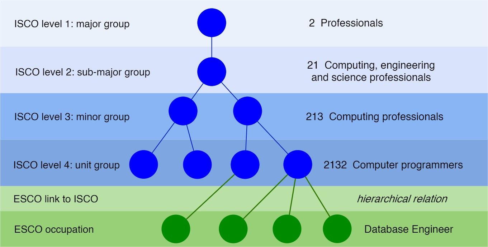

The goal of labourR is to map multilingual free-text of occupations, such as a job title in a Curriculum Vitae, to hierarchical ontologies like ESCO, the multilingual classification of European Skills, Competences, Qualifications and Occupations, and ISCO, the International Standard Classification of Occupations.

Computations are vectorised and the data.table package is used for high performance and memory efficiency.
See Articles section for details.
Installation
You can install the released version of labourR from CRAN with,
install.packages("labourR")
Examples
library(labourR) corpus <- data.frame( id = 1:3, text = c("Data Scientist", "Junior Architect Engineer", "Cashier at McDonald's") )
- If the ISCO level is specified, the top suggested ISCO group is returned.
num_leavesspecifies the number of ESCO occupations used for the k-NN classifier to perform a plurality vote,
classify_occupation(corpus = corpus, isco_level = 3, lang = "en", num_leaves = 5) #> id iscoGroup preferredLabel #> 1: 1 251 Software and applications developers and analysts #> 2: 2 214 Engineering professionals (excluding electrotechnology) #> 3: 3 523 Cashiers and ticket clerks
- If the ISCO level is not specified, the top num_leaves, in this case 5, suggested ESCO occupations are returned for each id,
classify_occupation(corpus = corpus, isco_level = NULL, lang = "en", num_leaves = 5) #> id conceptUri preferredLabel #> 1: 1 258e46f9-0075-4a2e-adae-1ff0477e0f30 data scientist #> 2: 1 1562c7a3-c7d9-419d-b9b6-db26610bcf84 data warehouse designer #> 3: 1 f470b785-643c-46f9-8b31-6085427ab7b8 aeronautical information specialist #> 4: 1 7086d0ca-1e77-4690-89c9-7ed1a0478fa3 data quality specialist #> 5: 1 d3edb8f8-3a06-47a0-8fb9-9b212c006aa2 data analyst #> 6: 2 76abbb82-c103-4d7a-a4c0-14dba4d6199a commissioning engineer #> 7: 2 c8fa93eb-7c2c-42c3-b135-c2e825a6615e test engineer #> 8: 2 e12f08fb-4748-4388-9489-b647df60332a hydropower engineer #> 9: 2 9dbbeb2c-0d51-4c03-8ef6-8dfa7360db22 ship assistant engineer #> 10: 2 2f26a52b-cf45-4282-9138-478252161f00 food production engineer #> 11: 3 3f32394b-f1b1-48ef-96ee-74405fb7c6b6 lottery cashier #> 12: 3 961cbd1f-2a9b-4756-b227-67a1c23c94b6 casino cashier #> 13: 3 2ff9e53c-6e7f-42af-8d71-b5dd7f283089 bank teller #> 14: 3 b7fc1cd1-0d6d-4e9e-8a9f-c3270201be81 foreign exchange cashier #> 15: 3 2b871272-bd61-4206-bd1a-0b96d7023098 cashier